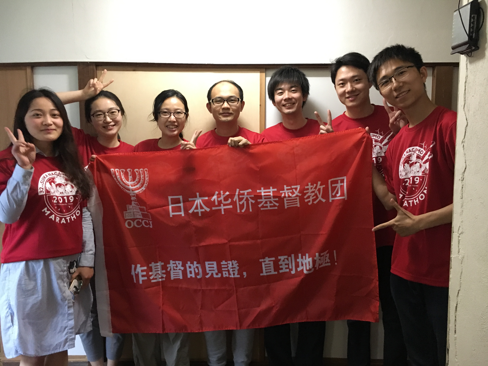
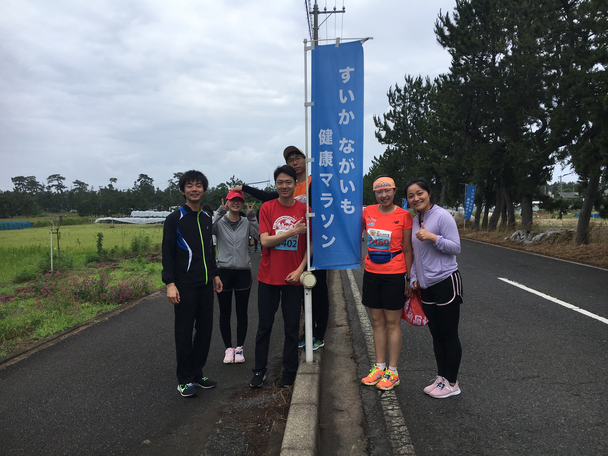
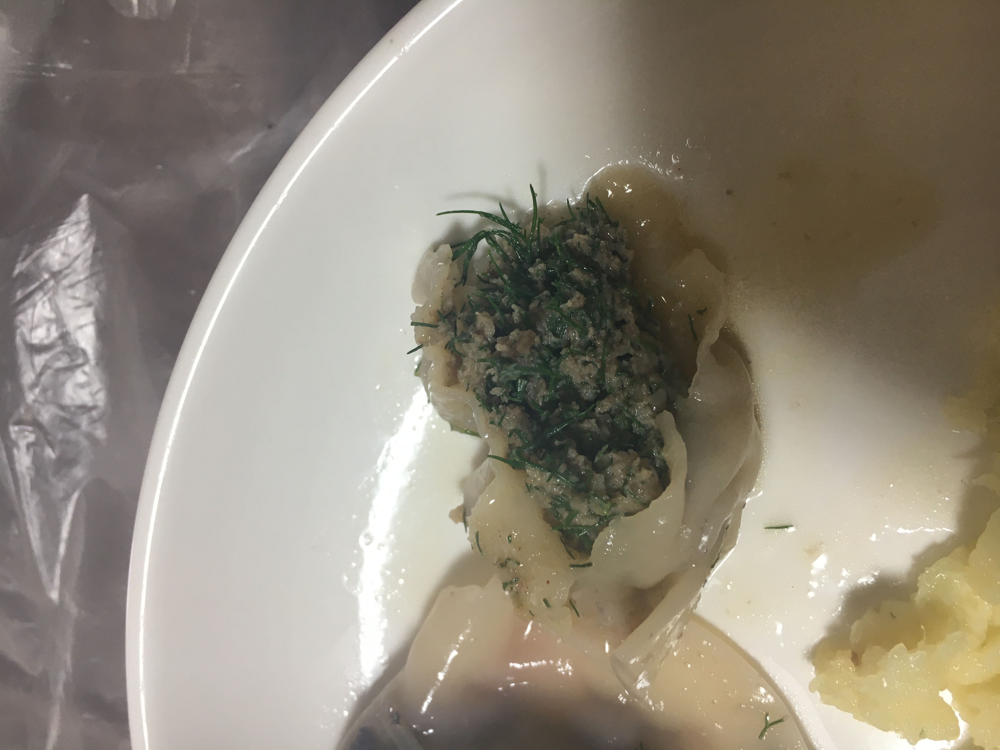

上一章
刚来西条，知道有教会。我第一周就去。不过去教会不是纯粹出于信仰，还有是因为一个人在外面，语言又不同，有事也得找个人问，所以我就那么快去教会了。后来参与了侍奉，和留学生关系更亲近。及后我有车了，叶经常组织大家去玩。在教会认识了很多好朋友，他们也经常来我家，大家有过非常愉快的时光。
每年过年年三十晚，教会都会组织聚餐，非常丰富。

先上菜，都是不同的人做的。
北方少不了的饺子，还有新鲜唐揚げ（日式炸鸡）。

厨房

开饭了。教会很多北方人，有北方名菜拔丝地瓜。

大合照。
某年圣诞彩排。


2017年12月3日我在教会第一顿饭。

在教会洗碗侍奉，是一项非常神圣的工作，还有人特别有恩赐，不但洗得干净而且特别积极。
教会的小朋友，现在都大了。
和朋友们在教会合影。
大家在厨房吃饭。

2019年年初学长家聚餐，他做了很多自以为多的吃不完，没想到大家20分钟就全部清光。
2019年6月，我首次组织活动。组织大家去鸟取参加10公里比赛，地点是柯南作者的故乡。事缘3月份我和另一位弟兄跑了鸟取马拉松，赛后去柯南博物馆逛。700元门票半小时看完，不过从博物馆得知这个10公里，就组织大家一起玩了。对于跑步我看过一些书及文献，事前给大家上了一节课。当时我刚从意大利回来，还送给每名报名者一双运动袜子。

训练开始。
这不是拉伸练习，是柔韧性测试，看看有什么部位太紧。

我给大家上课。

跳芭蕾舞的男士。

准备出发了。感谢强哥为我们做旗。

到达目的地先来个合影。
赛前一晚大家先喝一杯。

准备起跑了～
赛后的西瓜放题。
还有非常好喝的山药汤。
证书
大家开心吃西瓜。


赛后大合影。
赛后当天在学校附近一乐烤肉庆功。
干杯！

2019年9月，我再接再厉，组织大家参加学校接力赛。好像连续跑4小时，不限人数，不限制每人跑多少。正值初秋，银杏树已经金黄。之后一年疫情这比赛停了好几年。
我们先来欣赏学校初秋的银杏树。
现在来看看大家跑姿～
翔哥比较辛苦。
林姐妹
拍照最上象的洗碗王子屈。
午梅姐妹


森冈先生

接棒

最后上场的我。
场下也一样精彩。
今天专门打扮一番的经纪人花花。
打扮是为了拍美照，还有其他原因。。。
是为了和帅哥合影。
这个跳跃照片拍了无数张，这张最好就是屈不协调。话说这种照片乐乐最会拍。

谁的手机这张颜色那么鲜艳。


我们冲刺了。


最后当然是吃饭庆祝。当日大概下午两三点了，很多地方都关门，但镜山公园的酱油厂还开。
2019年端午节林姐妹给大家包的爱心粽子。


2020年3月，一位大家的好朋友要毕业去外县，我和另外两位好朋友在学校附近的youme town做相册给他。大家在努力制作。其实这个相册的念头是原来有年靓靓做给我的生日礼物。

制作完了。


收到礼物～
同样是2020年3月毕业季，当时周六团契我组织了一次阿姨感谢日，由留学生负责做饭，平时都是阿姨做给他们吃。那个时候疫情已经开始，很多人不来。我也就接管了厨房了，下面还有我周日做的国际美食。
大家在准备。我做的其中一个菜是山西拔烂子。首先需要土豆擦丝，这个工作不用动脑子，所以我交给别人做，不过我都说的很好听：你做的工作是最重要的。然后裹面粉是我和乐乐，最后林姐妹负责蒸。
拔烂子上了～
等吃～

猪耳朵，一般日本超市不好买。隔壁Mr Max超市很多一般日本超市买不到的东西。或说日本有烧烤店吃猪耳朵的，烧烤不错。
正宗山西拔烂子。有些地方蘸调料吃。
鸡脆骨。日本一般吃鸡胸软骨但我更爱这个。直接放锅里干煎，它会自己出很多油的。除了Mr Max我没在其他地方见过。
学长的红烧肉。他很会做的。
大家开饭，非常丰盛的一顿饭。
我们现在来看看疫情下的教会。
疫情下的聚会，很冷清。


很想吃茴香饺子。农家超市有买，有次买了教会包来吃。
我们来看疫情下的厨房，以前都是阿姨们主理，现在完全不一样了，菜的风格也变了，因为是我主理。不过都是我在拍照记录，所以照片没有我。
涛涛很积极。每次都问我有什么要帮忙。
于传道帮忙加菜。
强哥很积极每次饭后洗碗。
留学生当主厨。
现在来看看我做的菜，糖醋里脊。
阿姨做的东北酸菜。长期放在冰箱里。我们拿来炖肉了。
乐乐做的乡土料理 - 槐花炒鸡蛋。后来我自己在学校一个隐秘处也找到槐花摘了自己做。
印尼沙爹。因为见教会有很多黄油，我还做过英国班尼迪酱拌意大利面。
以下是我疫情下教会的日记：2020年5月10日
疫情下的教会
因为这个疫情，教会原来做饭的阿姨们都不来了，教会最后只剩下留学生和传道人。由于每人做饭，我带领留学生一同做饭的。
做饭其实是大家增进感情的好机会，比吃饭更好，那是因为大家同心合力去做一件事情。而且通过近期做饭，大家都很有创意，吃的菜都是以前阿姨没做过的。教会有不会做饭只会洗碗的男生，现在都会拿起锅铲来了。做饭过程中，大家都是乐趣无穷，彼此夸对方。我也发现，我眼里不愿意长大的“小孩”，近期看做饭的时候也是有点长大了，开始会承担责任来。我们每个菜都是几个人一起做的，炒，放调料，尝味道都不同的人做，大家分工合作。
最后，上些照片。
中间的是槐花炒鸡蛋，我很早就知道槐花能吃，但没机会吃，一个很爱花的mm采了带去教会炒鸡蛋，我吃了很多呢，味道很独特，很清新很好吃。
最后是糖醋鸡柳，我第一次做。做这个菜是因为这是我以前喜爱的食堂菜之一，大家都说好吃呢。
2020年5月17日
班尼迪蛋
这是英国很出名的早餐，要用大量黄油的。最近在教会帮忙做饭，而冰箱又有好几块黄油没人用，我就想起来这个菜了，做这个蛋的酱汁（hollandaise sause荷兰酱）可能会失败，所以我提前去教会试了。
做这个鸡蛋也不简单，要看youtube学的呢。我们做酱的过程也很成功，在日本我们享受了自己做的正宗英式早餐呢。真希望有个男朋友，有他帮忙，那我就经常研发新东西吃了。
看照片和外面买的一样呢。下图就是我当年去英国吃的。(照片省略)
2020年6月，大家给我办了生日派对，很开心呢。
日语生日歌。
中文生日歌。
吹蜡烛许愿。
唱歌及我们闲聊。
我的日记：20200607
生日会
一个很贴心的mm发起活动给我搞生日会，上次搞生日会是9年前30岁的时候，那次在北京庆祝，吃了3个蛋糕，非常开心（当时是要去丹东跑马拉松的）。今次也很开心呢。
我前两年就希望可以吃蛋糕许愿，在韩国国旗下（因为独立运动家有过在国旗下发誓，这表面明决心，尹丰吉就是一个例子，电影《暗杀》也有这幕）。虽然没有韩国国旗，但我许了愿了，小时候每次吃生日蛋糕许愿都是希望做一个天文学家，直到这不再重要。现在我又回到小时候那样了，我的心愿是，希望将来可以当个政治科学家。
未来的故事，我会努力去写。
下一章